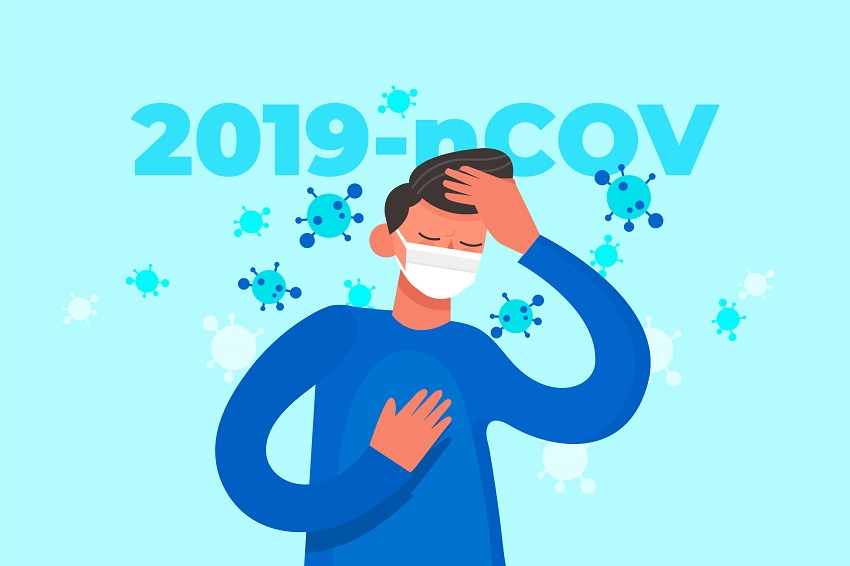
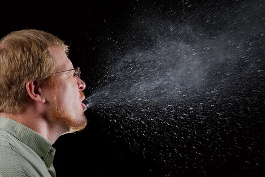

En esta sección se encuentra la información que se tiene sobre el COVID-19, se ira
actualizando en el caso de que se necesario, le mantendremos informado
¿Qué síntomas tiene el coronavirus?
Los principales síntomas del virus coronavirus incluyen:
• Síntomas respiratorios (similares a los de un resfriado)
• Fiebre (alta temperatura)
• Tos seca
• Falta de aliento o cansancio
• Dificultades respiratorias
En casos más graves, el virus puede causar neumonía o síndrome respiratorio agudo grave (SRAS)
que
es una forma grave de neumonía, insuficiencia renal y hasta la muerte.
En otros casos, algunas personas infectadas no desarrollan ningún síntoma, pero pueden contagiar
igualmente al resto de población.

¿Quién corre mayor riesgo de presentar un cuadro grave de COVID 19?
Las personas de más de 60 años y las que padecen afecciones médicas subyacentes,
como hipertensión arterial, problemas cardíacos o pulmonares, diabetes, obesidad o cáncer, corren un
mayor
riesgo de presentar cuadros graves.
Sin embargo, cualquier persona, a cualquier edad, puede enfermar de COVID-19 y presentar un cuadro
grave o
morir.
¿Cómo se transmite el coronavirus?
Según información de la OMS, el coronavirus se transmite por contacto de persona a persona con algún
infectado (incluso si no presenta síntomas).
Por ello, la mejor manera de evitar contraer este virus es siguiendo las buenas prácticas de higiene que
incluyen:

• Mantenerse alejado de las personas enfermas.
• No tocarse la cara (boca, nariz u ojos).
• Mantener una distancia mínima de un metro con el resto de las personas. (Distanciamiento Social).
• Lavarse las manos frecuentemente y a fondo por, al menos 20 segundos, con un desinfectante para
manos
a base de alcohol o lávalas con agua y jabón. Es importante hacerlo incluso si no hay suciedad
visible
en las manos.
• Practique la higiene respiratoria. Esto significa cubrirte la boca y la nariz con el codo o
pañuelo
doblado cuando toses o estornudas. Desecha inmediatamente el tejido usado.
• Lávese las manos siempre después de toser o estornudar; si está cuidando a alguien; cuando está
preparando alimentos, cocinando carnes y/o huevos. También después de comer;
después de usar el inodoro; si sus manos están sucias, y/o ha estado cerca de una granja o animales
salvajes.
• Quédese en casa y practique el aislamiento social o cuarentena.
• Quédese en casa si no se encuentra bien.
• Siga las indicaciones actualizadas de las autoridades sanitarias de su país.
¿Tiene el COVID 19 efectos a largo plazo?
Algunas personas que han padecido la COVID-19, tanto si han necesitado atención hospitalaria como si
no,
siguen experimentando síntomas, entre ellos fatiga y diversos síntomas respiratorios y neurológicos.